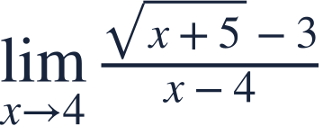
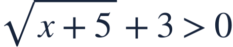
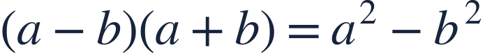
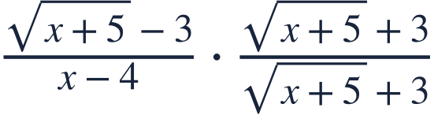
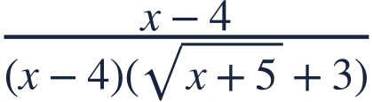
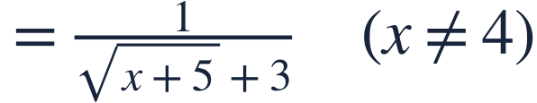
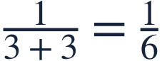
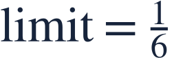
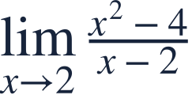

Factoring and conjugates
인수분해와 켤레식

A conjugate can reveal a factor hidden by a square root.
켤레식을 곱하면 근호에 숨은 인수가 드러납니다.

A conjugate can reveal a factor hidden by a square root.
켤레식을 곱하면 근호에 숨은 인수가 드러납니다.

Substitution gives 0/0. This is a signal to rewrite, not a final answer.
대입하면 0/0형입니다. 답이 아니라 식을 바꾸라는 신호입니다.

Use the difference of squares to remove the radical from the numerator.
제곱의 차를 이용해 분자의 근호를 정리합니다.

Multiply by a form of 1, so nearby values stay unchanged.
1과 같은 식을 곱하므로 주변 값은 바뀌지 않습니다.


Cancel the exposed factor only where it is nonzero.
드러난 인수가 0이 아닐 때만 약분합니다.

Now substitution is valid in the rewritten nearby expression.
이제 주변에서 같은 식에 대입할 수 있습니다.

Multiply both numerator and denominator by the conjugate.
분자와 분모에 모두 켤레식을 곱해야 합니다.

Which factor can you expose here?
이번에는 어떤 인수를 드러낼 수 있을까요?